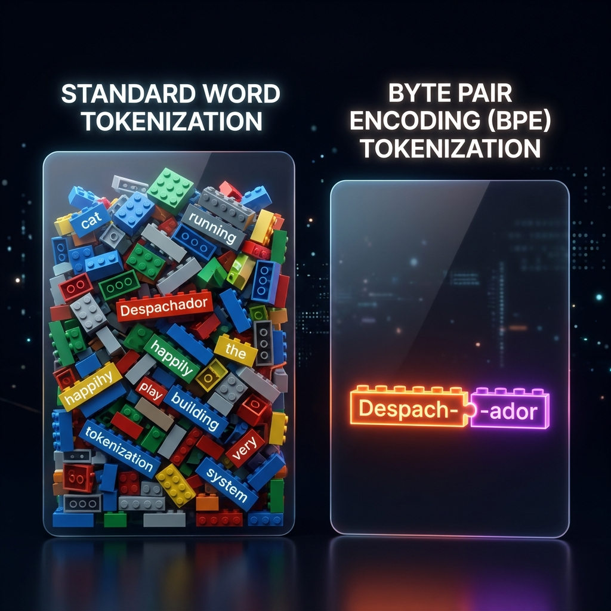

IA Generativa & Arquitectura RAG
Sesión 2: Cómo estructurar propuestas estratégicas de Inteligencia Artificial Generativa y dominar la arquitectura RAG basada en conocimiento privado.
Next-Token & Tokens
Desmitificamos el 'hype', simulamos Temperatura, BPE Tokens, Prompt Caching y Lost in the Middle.
Embeddings & Vectores
El GPS matemático de las ideas, similitud por coseno, Metadata Filtering y Chunking con Overlap.
Pipeline RAG & Mock PRD
Orquestación en 2 fases (Ingestión Batch vs Consulta Live) y especificación formal de un Chatbot IA.
Enterprise SLA & Evals
Zero-Retention, umbrales anti-alucinación (0.75), Golden Datasets en CI/CD y defensa ejecutiva.
El Origen y Motor de los LLMs
Del paper fundacional "Attention Is All You Need" (2017) al motor probabilístico de predicción del siguiente token.
El Mito: "Cerebro Mágico"
La Realidad: Transformers & Next-Token
El Paper Base: "Attention Is All You Need" (2017)
Publicado por investigadores de Google en 2017 para resolver la Traducción Automática. Creó la arquitectura Transformer (la "T" de GPT) y el mecanismo de Self-Attention: procesa toda la oración en paralelo y pondera cómo cada palabra modifica el significado de las demás según el contexto.
Fine-Tuning (Estilo) vs. RAG (Conocimiento)
El Fine-Tuning re-entrena un modelo para enseñarle un tono, estilo o formato (ej. responder en JSON). Regla de Oro: No sirve para cargar datos que cambian cada semana. Para conectar el modelo con tus manuales y glosarios privados sin alucinar, usamos RAG (Retrieval-Augmented Generation).
Tokens: La Economía de la IA
Los modelos de lenguaje no procesan palabras completas. Experimentá en vivo cómo impacta la tokenización BPE y el Prompt Caching en tu presupuesto.
Tokenizador BPE en Vivo
Estado: Texto Crudo (9 Palabras)Aproximadamente 1.000 tokens equivalen a 750 palabras en inglés (~650 en español por tildes y morfología). Las APIs cobran tarifas asimétricas: el Output cuesta de 3x a 5x más que el Input.

locali) y sufijos (zación). Reduce el vocabulario a ~100k tokens reutilizables y procesa neologismos sin errores.
Calculadora FinOps & Prompt Caching
Almacena en caché de servidor los prefijos estáticos del prompt (System Prompt, instrucciones de marca y glosarios fijos), reduciendo el costo de tokens de entrada entre un 50% y 75% y mejorando el TTFT (Time To First Token).
Ventanas de Contexto & Sesgo de Atención
Las limitaciones de memoria en prompts masivos y cómo los LLMs pierden hasta un 40% de retención en el centro geométrico del contexto.
Ventana de Contexto (Memoria RAM del LLM)
Define el límite físico de tokens (texto de entrada + historial + fragmentos recuperados + respuesta generada) que el modelo puede procesar en una sola llamada de API. Aunque hoy existan ventanas de 128k a 1M de tokens, inyectar manuales enteros degrada la precisión, dispara la latencia y multiplica el costo por consulta.

Simulador Interactivo: Curva "Lost in the Middle"
Mové el cursor o hacé clic en las zonas de la ventana de contexto para ver cómo varía la tasa de retención (Recall) del modelo según dónde inyectes la regla de negocio:
Embeddings: Traducción Semántica
El GPS matemático de las ideas: cómo transformamos conceptos de negocio en vectores de 1536 dimensiones para medir cercanía de significado.
Text Input
Se ingresa una frase o consulta: "Validar glosario técnico para lanzamiento global".
Embedding Model
El modelo traduce el sentido semántico en un vector de coordenadas (ej. 1536 números flotantes).
Similitud por Coseno
Conceptos afines quedan con ángulo cercano (Score → 1.0) aunque no compartan palabras exactas.
Radar Semántico 3D

Bases Vectoriales & Metadata Filtering
La memoria a largo plazo persistente de la IA y cómo acelerar búsquedas reduciendo ruido mediante filtros estructurados previos.
Persistencia Semántica (Pinecone / pgvector)
Las bases de datos relacionales (SQL) buscan coincidencias exactas de letras (LIKE '%checkout%'). En cambio, las Bases de Datos Vectoriales (Pinecone, Qdrant, Weaviate, pgvector) indexan millones de embeddings y encuentran el fragmento conceptualmente correcto en milisegundos.
idioma, vigencia, módulo, rol_acceso) es responsabilidad directa del PM junto al Tech Lead.
Simulador en Vivo: Metadata Pre-Filtering
Activá o desactivá las etiquetas de metadatos para ver cómo se descartan los vectores obsoletos antes de calcular la similitud semántica:
Ejecutando búsqueda semántica optimizada filtrando en: [Idioma: ES-LATAM]
Chunking: Estrategias de Fragmentación
Cómo cortar documentos extensos sin quebrar el sentido gramatical y calibrar el porcentaje de solapamiento (Overlap).
Estrategias de Segmentación Documental
No podemos vectorizar un PDF de 300 páginas como un único bloque. El proceso de Chunking lo divide en fragmentos discretos (ej. 500 a 1.000 caracteres). Si cortamos a ciegas en medio de una condición o tabla de tarifas, el modelo recuperará una regla truncada y alucinará.
##), párrafos y signos de puntuación antes de dividir.
Simulador Interactivo de Overlap (%)
Mové el slider de Overlap (Solapamiento) entre 0% y 25% para observar cómo el puente semántico evita perder condiciones entre fragmentos contiguos:
Anatomía de RAG: Fase 1 (Ingestión)
La etapa Batch asincrónica de procesamiento, fragmentación y vectorización del conocimiento privado del negocio.
Se recopilan y sanean los documentos oficiales que regulan el negocio (manuales de producto, guías de estilo, glosarios aprobados y wikis internas). Esta etapa corre en segundo plano (Batch) cada vez que se publica o actualiza un documento, sin afectar la velocidad de los usuarios finales.
Anatomía de RAG: Fase 2 (Consulta en Vivo)
Cómo el sistema orquesta en milisegundos la búsqueda semántica para alimentar al LLM con evidencia física ("Examen a Libro Abierto").
El usuario realiza una consulta en lenguaje natural: "¿Qué criterios de estilo y terminología se aplican al módulo de pagos para usuarios de Latinoamérica?". El backend convierte esa pregunta en un vector de 1536 dimensiones en milisegundos.
Taller: El Mock PRD (Enterprise Knowledge Bot)
Cómo traducimos las decisiones de arquitectura RAG en requisitos técnicos y criterios de aceptación (Definition of Done) de un PRD real.
Asistente corporativo basado en RAG para que equipos de Producto, Ingeniería y Localización consulten manuales técnicos, guías de estilo y reglas de negocio con cita obligatoria a la fuente.
idioma, año_vigencia, modulo, tipo_doc
Parámetros medibles que Ingeniería y QA deben cumplir antes de habilitar el despliegue a producción:
Gobernanza de IA & Data Leakage
Cómo proteger la propiedad intelectual y los datos confidenciales exigiendo contratos Enterprise SLA con Zero-Data Retention.
Peligro: Chat Público / Licencias Consumer
Estándar Corporativo: API bajo Enterprise SLA
Mitigación de Alucinaciones: Umbrales
El control lógico de confianza semántica (Confidence Threshold) para obligar al bot a abstenerse cuando no existe respaldo documental.
Confidence Thresholds (Compuerta Anti-Alucinación)
Un LLM por sí solo es complaciente: si el usuario pregunta algo que no está en los manuales, intentará adivinar. En una arquitectura RAG profesional, la base vectorial devuelve un Score de Similitud Semántica (0.00 a 1.00) antes de llamar al LLM.
Como PMs, definimos en el PRD una regla determinista: si el mejor fragmento recuperado tiene un score menor a 0.75, el backend cortocircuita la llamada al LLM y devuelve un fallback controlado.
Simulador en Vivo: Umbral de Confianza (0.75)
Deslizá el Score de Similitud o probá consultas reales para ver cómo actúa la compuerta lógica:
Envía al LLM
Bloquea y Rechaza
Evaluación de Calidad: Golden Dataset & Evals
Cómo auditar sistemáticamente software probabilístico en el pipeline de CI/CD antes de cada lanzamiento.
1. Golden Dataset
Conjunto curado de 50 a 100 preguntas reales y casos borde asociados a sus respuestas ideales certificadas por expertos del dominio (Ground Truth).
2. Evals en CI/CD
Ante cada Pull Request que cambie el prompt o el chunking, se ejecuta el Golden Dataset midiendo Context Adherence (≥ 90%) y bloqueando el deploy si hay regresión.
3. Observabilidad (LLMOps)
Monitoreo en producción de latencia, costo en dólares por sesión, tasa de fallback y deriva semántica con plataformas como Langfuse o Arize Phoenix.
Roleplay: Defensa Técnica en Entrevistas IT
Entrená tus respuestas ejecutivas frente a un CTO o VP of Product. Hacé clic en cada escenario para revelar los 3 pilares ganadores.
¿Por qué no realizar Fine-Tuning para alimentar al modelo con nuestros glosarios y manuales de producto que cambian cada semana?
Respuesta Estrella: "El Fine-Tuning no es adecuado para inyectar conocimientos fácticos cambiantes, ya que el modelo sigue alucinando de memoria estática. El Fine-Tuning se utiliza para ajustar estilo, tono o formatos de salida estructurados. Para garantizar precisión absoluta y actualización en tiempo real, la propuesta correcta consiste en implementar una arquitectura RAG combinada con una base de datos vectorial."
¿Cómo mitigan los costos de API si el volumen de usuarios escala linealmente?
Respuesta Estrella: "Implementamos tres estrategias de optimización FinOps: 1) Prompt Caching para reducir hasta un 50%-75% la facturación de entrada de reglas fijas; 2) Caché Semántica a nivel de backend para responder consultas frecuentes sin invocar al LLM; y 3) Metadata Filtering + Rate Limits por perfil de usuario corporativo."
Tu Ruta y Valor como IT Product/Project Manager
Consolidá tu perfil técnico diferenciando tu alcance de RAG actual y el puente hacia los Agentes Autónomos de la Sesión 3.
El Súper-Poder del IT PM en IA
Comprender RAG, embeddings y tokens no es para programar; es para liderar equipos de ingeniería con criterio de negocio y viabilidad técnica:
Evolución del Programa: De Leer a Ejecutar
Cómo se conecta lo que dominaste hoy con las próximas sesiones de la mentoría:
Entregables y Práctica de la Sesión 2
Poné a prueba tus decisiones en el Simulador Práctico S2 y completá el Mock PRD del "Enterprise Knowledge Bot" (Chunking, Overlap, Umbral 0.75 y Enterprise SLA).